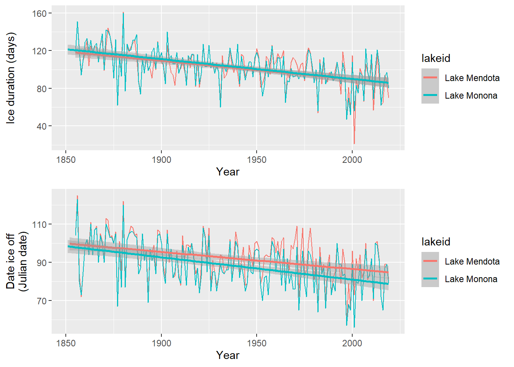

Autocorrelation
Assigned Reading:
- Dynamic Ecology blog. (Oct 2, 2013). Autocorrelation: Friend or Foe? https://dynamicecology.wordpress.com/2013/10/02/autocorrelation-friend-or-foe/
- Diniz‐Filho, J. A. F., Bini, L. M., & Hawkins, B. A. (2003). Spatial autocorrelation and red herrings in geographical ecology. Global Ecology and Biogeography, 12(1), 53-64.
- Guélat, J., & Kéry, M. (2018). Effects of spatial autocorrelation and imperfect detection on species distribution models. Methods in Ecology and Evolution, 9(6), 1614-1625.
Overview
For our autocorrelation lab, we will again be using the lterdatasampler package, but this time, we’ll be using two different datasets. First, we will use the nwt_pikas dataset to investigate spatial autocorrelation. Second, we will use the ntl_icecover dataset to learn about temporal autocorrelation. Let’s get started!

# List of packages necessary to run this script:
require(librarian, quietly = TRUE)
shelf(tidyverse, cowplot,
lterdatasampler, # For LTER data
sf, # For geospatial analyses and plotting
ncf, # For spline.correlog
nlme, # For gls
lib = tempdir(),
quiet = TRUE)
# Read in data files
data("nwt_pikas")
data("ntl_icecover")Example 1: Peaked pikas
Read the data description for the nwt_pikas datset, and then do a bit of data exploration on your own. For example:
- Check out the ranges of elev_m and concentration_pg_g.
- What are UTMs? What do they mean, and what is the rough location they telling us the pikas are?
Okay, now let’s create our first maps to explore the data further and look for any obvious signs of spatial autocorrelation:
# Convert to sf object
pika_sf <-
sf::st_as_sf(
nwt_pikas,
coords = c("utm_easting", "utm_northing"),
crs = st_crs(32613) # UTM zone 13 (Niwot Ridge LTER)
)
# Map the pika locations with variables of interest varying by size/color
pika_conc_map <-
ggplot(pika_sf) +
geom_sf(aes(size = concentration_pg_g, # sf::geom_sf is for creating spatial ggplot
color = sex),
alpha = 0.5)
pika_elev_map <-
ggplot(pika_sf) +
geom_sf(aes(color = elev_m)) +
scale_color_viridis_c()
# Plot maps together
plot_grid(pika_elev_map, pika_conc_map, ncol = 1, align = "hv")Do you see any evidence of spatial autocorrelation in these maps? On your own, try changing the color scales, the dot sizes, etc. to further investigate.
Visualizing spatial patterns is critical, but we often need more rigor–and specific information on distances and directionality of autocorrelation. There are multiple tests for spatial autocorrelation (some popular ones being Moran’s I and semivariograms). However, one of my favorites is the spline correlogram because 1) it’s easy to run, and 2) it gives just as much (and maybe more) information as other methods. The downside is that, depending on the size of your data, it can take a long time to run.
On your own, run the spline correlogram code below and interpret the plots. If you need help understanding the plots, read the ?spline.correlog help page and/or our Zuur et al. (2009) book (page 480).
# Spline Correlograms using the "ncf" package.
# NOTE: depending on your data, these can take a LONG time. Beware.
pika_elev_splcor <-
spline.correlog(x = nwt_pikas$utm_easting,
y = nwt_pikas$utm_northing,
z = nwt_pikas$elev_m,
resamp = 500) # Number of bootstrap samples.
pika_conc_splcor <-
spline.correlog(x = nwt_pikas$utm_easting,
y = nwt_pikas$utm_northing,
z = nwt_pikas$concentration_pg_g,
resamp = 500)
# Plot the spline correlograms!
plot(pika_elev_splcor)
plot(pika_conc_splcor)Example 2: Thawing lakes
Read the data description for the ntl_icecover datset, and then do a bit of data exploration on your own. For example:
- How many years of data are there??
- How many lakes are actually in the data?
- Can you tell which months are most common in the “ice_off” column?
At this point, you may be thinking to yourself “uh, dealing with dates in R is super annoying.” Your feelings are valid. However, there are some ways to make dates less annoying. For instance, converting dates to the POSIX* format (see ?POSIXlt):
# Convert the "ice off" and "ice_on" dates to the POSIX* format and extract Julian date
ntl_icecover <-
ntl_icecover %>%
mutate(ice_off_julian = as.POSIXlt(ntl_icecover$ice_off,
format = "%d%b%y")$yday,
ice_on_julian = as.POSIXlt(ntl_icecover$ice_on,
format = "%d%b%y")$yday)
# Print the data.frame to see what we did:
head(ntl_icecover)## # A tibble: 6 × 7
## lakeid ice_on ice_off ice_duration year ice_off_julian ice_on_…¹
## <fct> <date> <date> <dbl> <dbl> <int> <int>
## 1 Lake Mendota NA 1853-04-05 NA 1852 94 NA
## 2 Lake Mendota 1853-12-27 NA NA 1853 NA 360
## 3 Lake Mendota 1855-12-18 1856-04-14 118 1855 104 351
## 4 Lake Mendota 1856-12-06 1857-05-06 151 1856 125 340
## 5 Lake Mendota 1857-11-25 1858-03-26 121 1857 84 328
## 6 Lake Mendota 1858-12-08 1859-03-14 96 1858 72 341
## # … with abbreviated variable name ¹ice_on_julianNow that we’ve done that, first make sure you understand what “Julian date” is.
Okay, let’s check out the patterns in how long ice is staying on the lakes over time, and when the lakes are thawing over time:
# Plot ice duration by lake
ice_duration_plot <-
ggplot(ntl_icecover,
aes(x = year, y = ice_duration, color = lakeid, group = lakeid)) +
geom_line() +
geom_smooth(method = "lm", formula = y ~ x) +
xlab("Year") +
ylab("Ice duration (days)")
# Convert the "ice off" date to the POSIX* format and extract Julian day
ice_off_plot <-
ggplot(ntl_icecover,
aes(x = year, y = ice_off_julian, color = lakeid, group = lakeid)) +
geom_line() +
geom_smooth(method = "lm", formula = y ~ x) +
xlab("Year") +
ylab("Date ice off\n(Julian date)")
# Plot patterns together
plot_grid(ice_duration_plot, ice_off_plot, ncol = 1, align = "hv")
Looks like some clear patterns! However, you may notice a few things:
- These patterns are repeated measurements from only two lakes!
- There seems to be some inter-annual patterns over time. Describe them to yourself.
As with the maps, I hope you can visually detect the temporal autocorrelation in these lake data. There are ways to statistically test for temporal autocorrelation, but unlike our spatial example, they’re very quick to run! Check out this code using the acf() “autocorrelation function” and ccf() “cross correlation function”. On your own, interpret the resultant plots.
# Plot temporal auto-correlation for ice duration at Lake Mendota:
acf_df <- # Prepare for acf
ntl_icecover %>%
na.omit() %>%
filter(lakeid == "Lake Mendota") %>%
select(ice_duration) %>%
as.matrix()
acf(acf_df[ , 1]) # Run acf
# Cross-correlation for ice duration and ice off
ccf_df <-
ntl_icecover %>%
na.omit() %>%
filter(lakeid == "Lake Mendota") %>%
select(c("ice_duration", "ice_off_julian")) %>%
as.matrix()
ccf(x = ccf_df[ , 1], # ice duration
y = ccf_df[ , 2], # ice off julian
ylab = "Cross-correlation")
On your own, interpret these acf and ccf plots. In particular, ask yourself:
- On the plots, what does the blue dashed line mean?
- What does “lag” mean?
- What do the y-axis values mean?
Discussion questions:
If you were trying to model pika stress levels via the nwt_pikas dataset, how might the spatial autocorrelation you detected affect your conclusions/the model outputs?
If you were trying to model ice duration change over time, how might the temporal autocorrelation you detected affect your conclusions/model outputs?